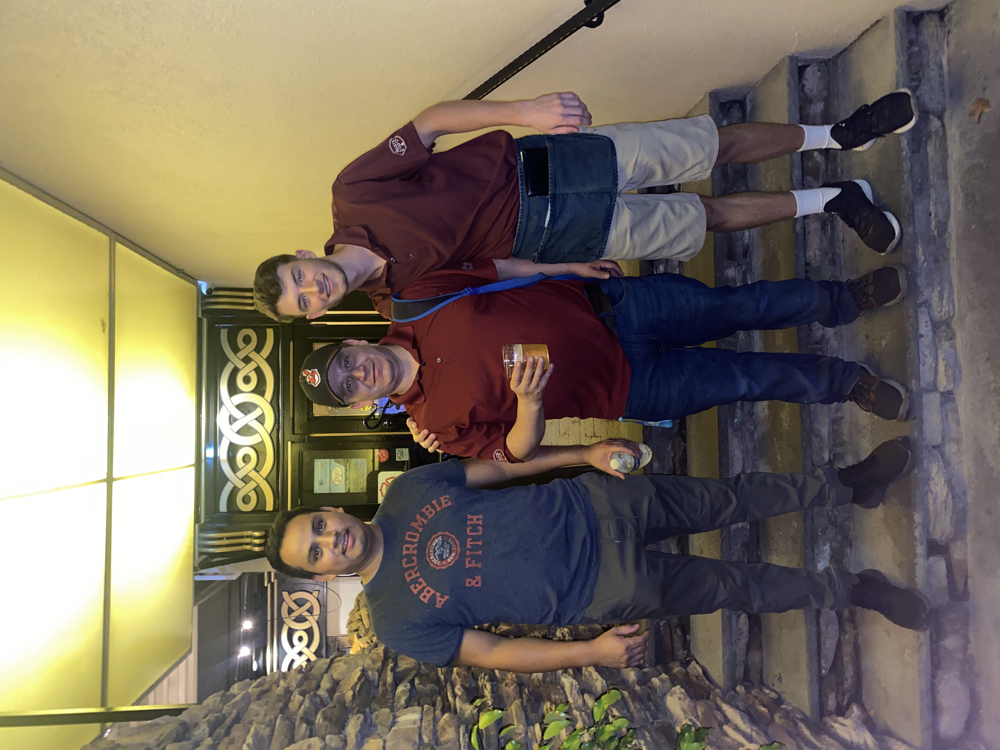

Lastly, I want to pay respects to what made the person I am today. Without a humbling work experience, I would not have such a profound apreciation for the food industry and those working within it. Over this past summer, I worked as a full-time waiter at an Irish steakhouse called Hearth and Tap. It was an amazing experience, I made lots of friends with the workers in the kitchen, and imrpoved my people skills throughout the process. Below is a picture of two of my favorite co-workers and myself after my last shift before heading back to school. I hope my future work experiences give me the same perspective on life that waitering at Hearth and Tap did.
